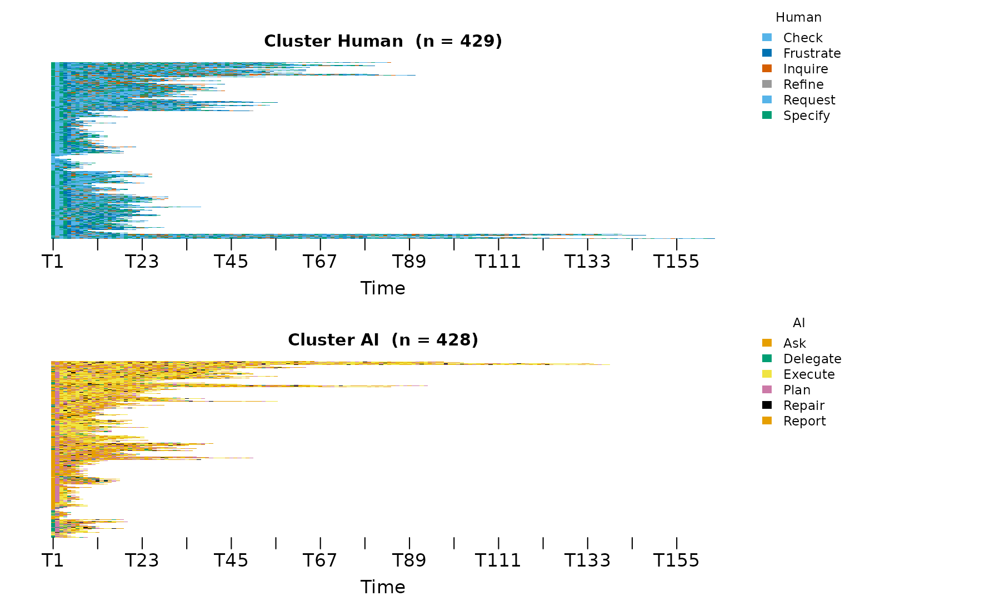
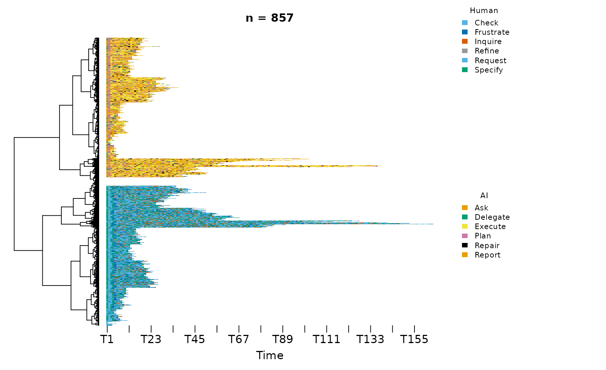
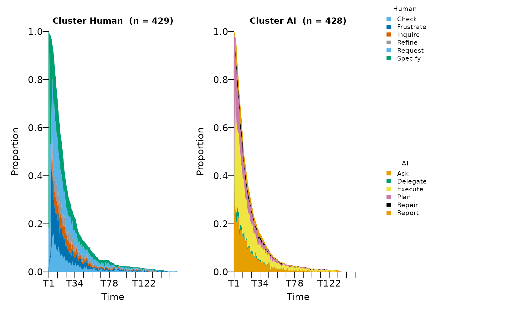
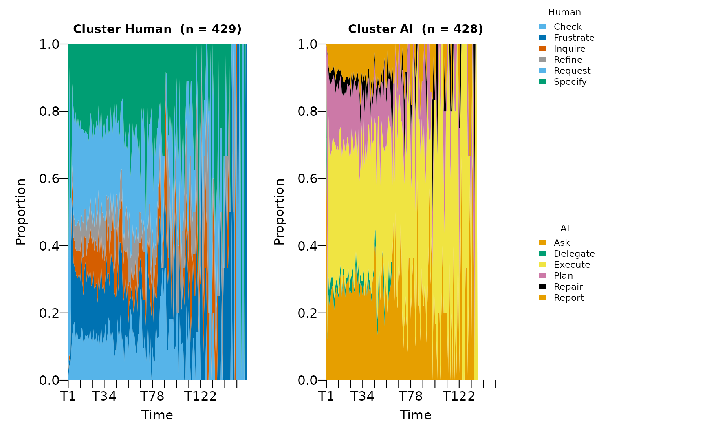
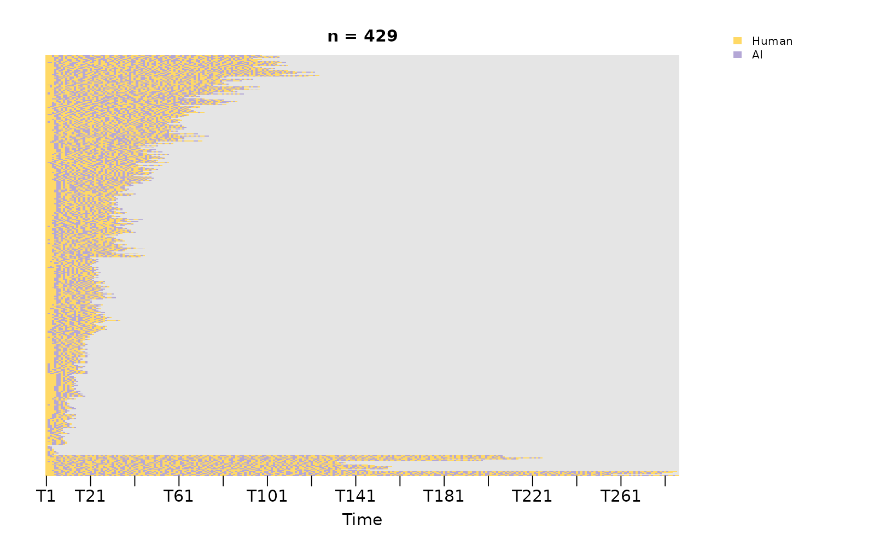
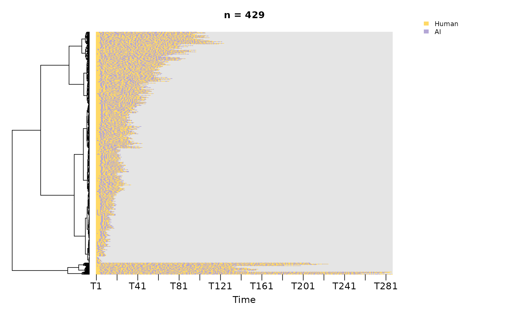
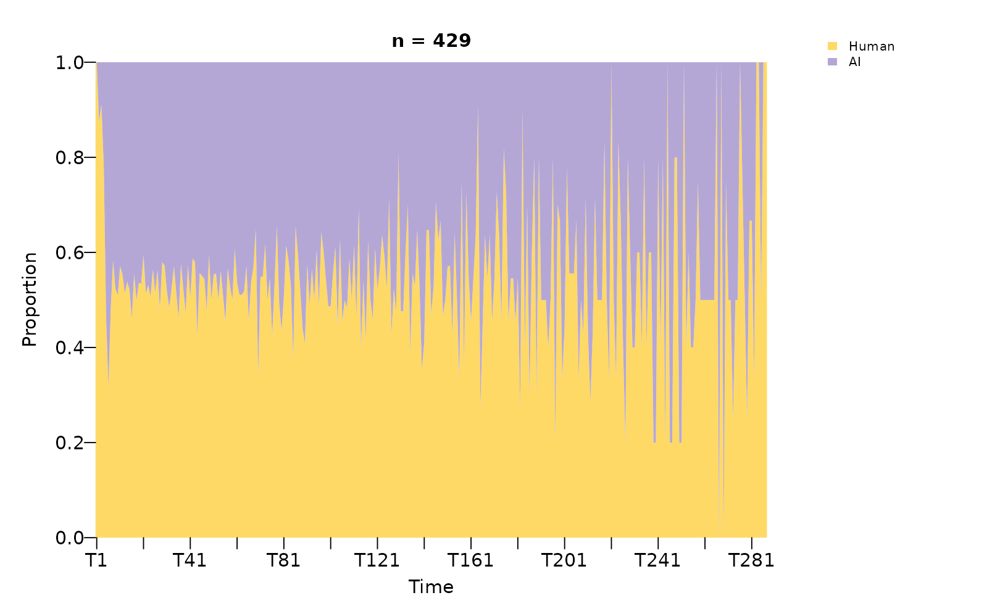

A transition network compresses a corpus of trajectories into a single graph. The network representation supports the analysis of structure — connectivity, centrality, and aggregate transition weights — but does not retain the temporal ordering of events within sessions. Analyses concerned with dynamics (the timing of states within a session, alternation between actors, or differences between early- and late-session behaviour) require complementary visualisation of the sequences themselves.
sequence_plot_htna() provides this complementary view
for heterogeneous transition networks. The function renders each session
as a coloured strip, accommodating large numbers of sessions in a single
figure, and exposes two orthogonal arguments that determine the visual
encoding:
-
typecontrols layout:"index"(default; one panel per actor, vertically stacked, each row a session),"heatmap"(a single carpet across both actors with a separator at the actor boundary), or"distribution"(a stacked-area summary across sessions). -
bycontrols colour semantics:"state"(default; each state code receives a distinct colour, suitable for examining within-actor vocabularies) or"group"(each actor receives a single colour applied to the combined session matrix, suitable for examining turn-taking).
The two arguments are independent. The remaining sections present each of the six combinations and identify the question each is suited to.
Data and network
The example uses the bundled human_ai corpus – Human +
AI events in a single long frame, tagged by an actor_type
column (see ?human_ai). The actor partition is recorded as
node-level metadata on the resulting htna network and is consumed
automatically by every plot below.
library(htna)
data(human_ai)
net <- build_htna(human_ai, actor_type = "actor_type")Per-state colouring (by = "state")
Per-state colouring assigns a distinct colour to each state code, allowing the within-actor vocabulary to be inspected directly. The two-actor case yields two non-overlapping palettes, since htna actor vocabularies are typically disjoint by construction.
Index layout
The index layout assigns one panel per actor and renders each session as a horizontal strip within that panel. The horizontal axis is time; the vertical axis enumerates sessions, sorted by similarity under a longest-common-subsequence metric. Reading is by row: the sequence of colours along a session strip indicates the order of codes produced by that actor.
sequence_plot_htna(net)
Vertically aligned colour blocks within a panel correspond to states that occur in long uninterrupted runs across many sessions; these visual signatures map directly to strong self-loops in the underlying transition network.
Heatmap layout
The heatmap layout combines the per-actor panels into a single carpet, separated by a white band marking the actor boundary. This view emphasises corpus-level differences between actors in session length and uniformity.
sequence_plot_htna(net, type = "heatmap")
The white separator does not encode data; it is a visual marker distinguishing the two actor regions of the otherwise contiguous matrix.
Distribution layout
The distribution layout aggregates across sessions: at each timestep, the proportion of sessions occupied by each state is plotted as a stacked area. The result summarises the state composition of the corpus as a function of session time.
sequence_plot_htna(net, type = "distribution")
A grey “NA” band appears in this view because each per-actor sequence is NA-padded at the timesteps when the other actor was acting. The padding is a structural feature of the per-actor extraction. Removing it normalises the proportions over present states only:
sequence_plot_htna(net, type = "distribution", na = FALSE)
The NA-suppressed view is the appropriate display when the analytic question concerns the state mix of each actor; the default view is appropriate when the question concerns when each actor is silent.
Per-actor colouring (by = "group")
Per-actor colouring collapses the palette to one colour per actor, applied to the combined session matrix. Within-actor detail is lost in exchange for a clean turn-taking view: the colour at each cell identifies which actor was acting at that timestep.
Index layout
sequence_plot_htna(net, by = "group")
Sessions in which actors alternate frequently appear striped; sessions in which one actor dominates appear as solid blocks.
Heatmap layout
sequence_plot_htna(net, type = "heatmap", by = "group")
Per-actor faceting is unnecessary under group colouring because each cell carries actor identity through its colour. The single carpet layout emphasises macro-level patterns in actor balance and session length.
Distribution layout
sequence_plot_htna(net, type = "distribution", by = "group")
The combined session matrix is fully populated (every timestep has an active actor), so no NA band appears. The plot displays the proportion of sessions in which each actor was acting at each timestep — a turn-taking summary across the corpus.
Selection criteria
The six combinations address distinct analytic questions:
| Analytic question | Recommended view |
|---|---|
| Within-session ordering of codes per actor type |
type = "index", by = "state"
|
| Corpus-level differences in session length and uniformity |
type = "heatmap", by = "state"
|
| Evolution of state composition over session time, per actor |
type = "distribution", by = "state",
na = FALSE
|
| Turn-taking pattern within individual sessions |
type = "index", by = "group"
|
| Macro-level actor balance and session length |
type = "heatmap", by = "group"
|
| Corpus-level actor balance over session time |
type = "distribution", by = "group"
|
The default — sequence_plot_htna(net) — is a
general-purpose diagnostic suitable for an initial inspection of any
htna corpus.